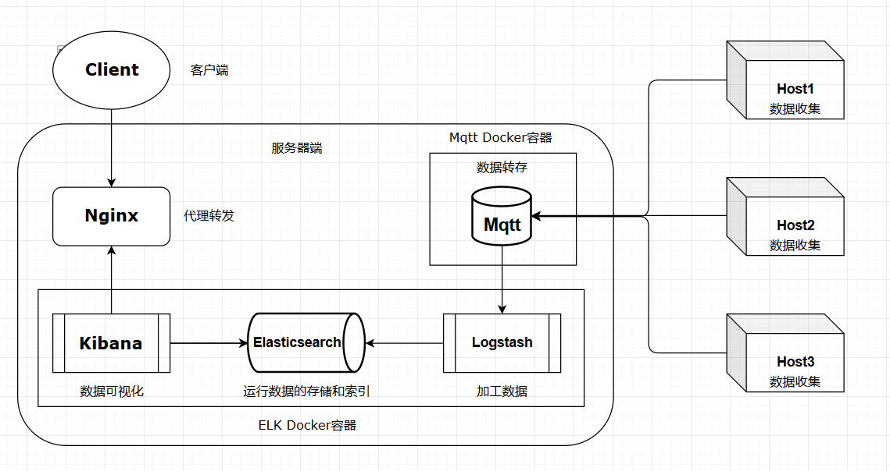

Docker+ELK+Mqtt可视化物联网平台 发表于 2020-11-24 阅读次数： 本文字数： 205 阅读时长 ≈ 1 分钟 本文记录了作者搭建Docker+ELK+Mqtt可视化物联网平台的过程。 摘要作者参加学校的SRTP项目，要求快速上线一个物联网可视化平台，于是选择了Docker+ELK+Mqtt的方案。 持续更新中 拓补图 基本流程 从Host处（机械）收集数据 上传至Mqtt数据库转存 Mqtt将数据送往Logstash加工 加工完成后，大量数据存储在Elasticsearch Kibana通过调取Elasticsearch中的数据，直接在可视化界面展示 用户在客户端（Client）访问服务器，查询状态等信息